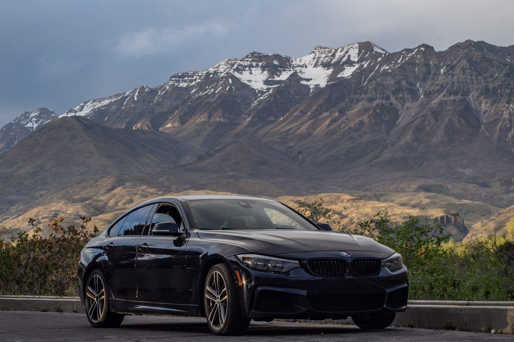
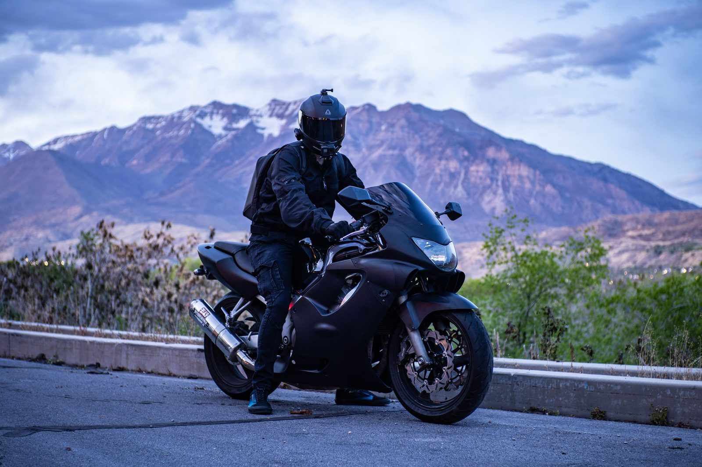

About
Shot for the car, not the feed.
RevSnap Media is Clark Farmer's automotive photography studio — based in Provo, working across Utah County and the Salt Lake Valley. Cars, motorcycles, and the light that makes them worth looking at twice.
The approach
A car looks different at every hour. I chase the one that flatters it.
Every shoot starts with the light, not the location. Canyon roads at last light for the paint that needs a warm edge. Sodium-lit storefronts after close for the cars that want hard contrast. Empty decks at blue hour for anything that reads better against a clean sky than a busy background. The car decides the plan — I just show up with the right hour already picked.
I edit the same way I shoot: for the car, not for a filter. Color stays true to the paint. Nothing gets stretched into looking faster or shinier than it is in person — the goal is a photo you'd trust as much as the car itself.

Behind the shoot
How a session runs
Scout
Location gets picked around the car's paint and body lines, then checked against the light for the time of day we're shooting.
Shoot
On location, handheld, moving fast while the light holds. No studio strobes standing between the car and how it actually looks outside.
Edit
Selects get graded to the paint's real color, not a preset. First edits back within 48 hours.
Service area
Utah County & the Salt Lake Valley
Based in Provo. On location anywhere worth the drive across Orem, Lehi, and the greater Salt Lake City metro.
Provo
Home base
Orem · Lehi
Utah County
Salt Lake City
SLC metro & beyond
The work is cars and motorcycles. That said, the door is open for experimental collaborations — if you have something unconventional in mind, send it over.
